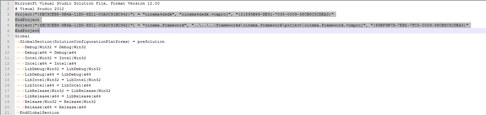
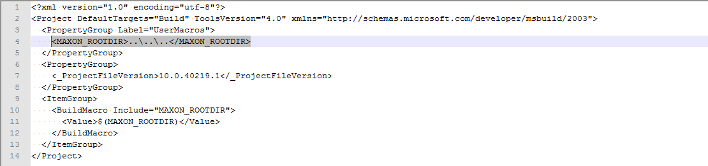

This page lists the steps to setup a new Visual Studio plugin project from cinema4dsdk examples project.
Copy cinema4dsdk folder from plugins\\examples and rename the solution cinema4dsdk.sln and the project cinema4dsdk.vcxproj to the new project name.
Edit the solution (.sln) file and replace cinema4dsdk occurrences with the name of the project:
Project(... "cinema4dsdk", "cinema4dsdk.vcxproj" ...)
to
Project(... "ProjectName", "ProjectName.vcxproj" ...)
Change the path to cinema.framework project to point to the Cinema 4D path. The path can be absolute or relative. It is also possible to copy the SDK folder frameworks to another place.
Project(... "cinema.framework", "..\..\..\frameworks\cinema.framework\project\cinema.framework.vcxproj" ...)
to
Project(... "cinema.framework", "[PathToCinema4D]\frameworks\cinema.framework\project\cinema.framework.vcxproj" ...)

Edit projectsettings.props and change MAXON_ROOTDIR to point to the parent folder where the target SDK is located. MAXON_ROOTDIR must point to the root folder for an installation of Cinema 4D or the parent folder of a copied SDK.
<MAXON_ROOTDIR>..\..\..</MAXON_ROOTDIR>

The solution can now be opened in Visual Studio. It may be needed to reload the plugin project. Right-click on the project in the Solution Explorer and choose Reload Project from the menu.
Keep and edit the sources/resources for the desired plugin(s) to develop or remove them all and add existing/new ones.
To automatically copy the plugin files (resources, dynamic library etc.) to the user folder add these commands Post-Build Event in the Build Events project settings:
xcopy "$(ProjectDir)res\*.*" /F /S /Y "path\to\user\folder\MAXON\R16\plugins\PluginName\res\" copy "$(TargetPath)" "path\to\user\folder\MAXON\R16\plugins\PluginName\"
{kind=link}
{kind=link}